Social network tabs Website View
Social Tabs on left and right side

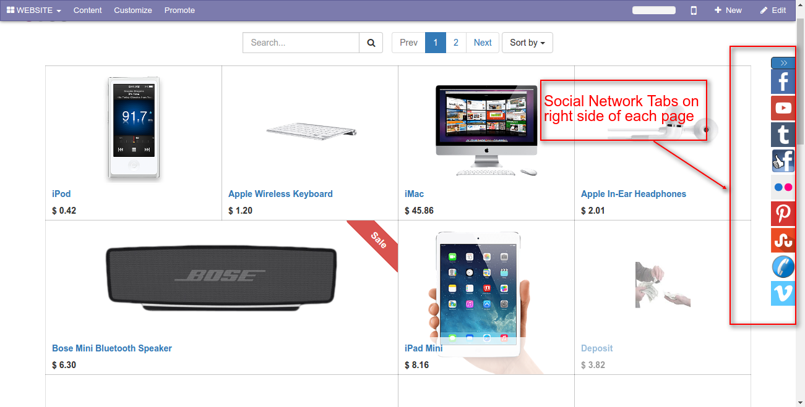
Content displayed on clicking a tab
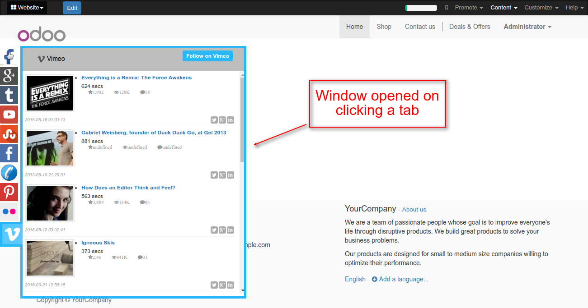
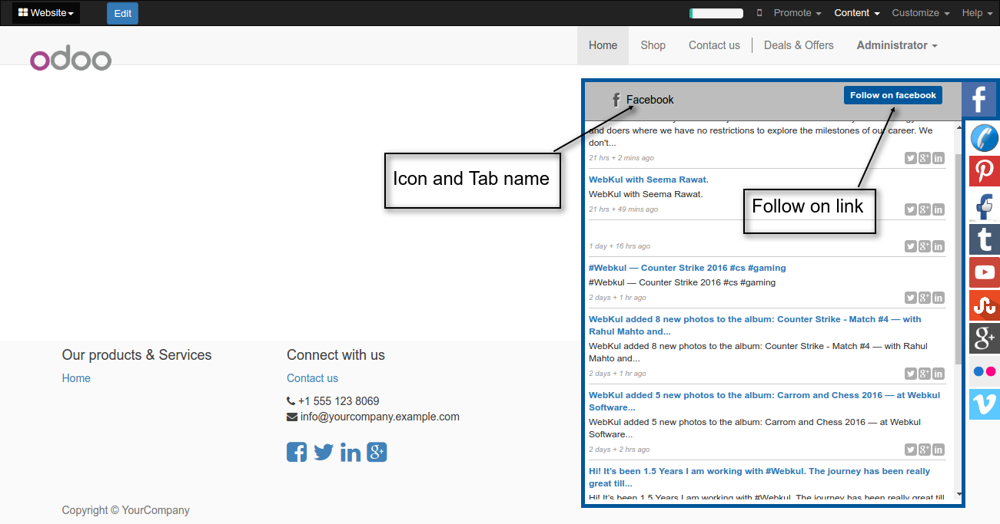
Show/Hide Tabs
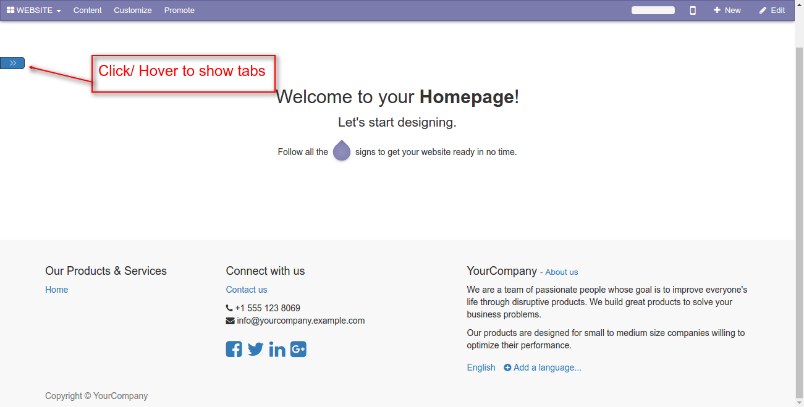
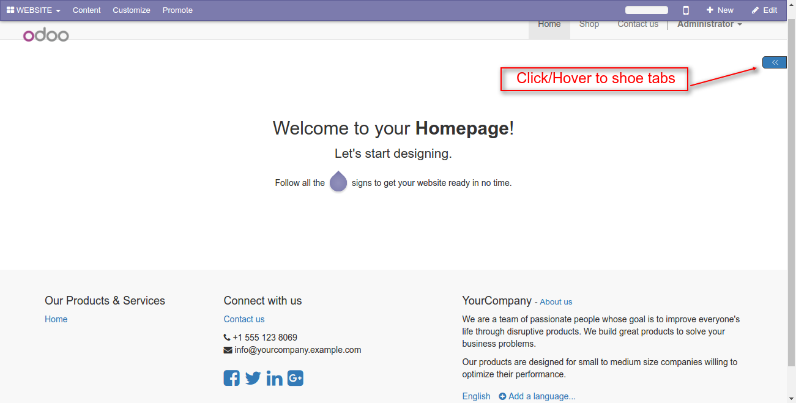
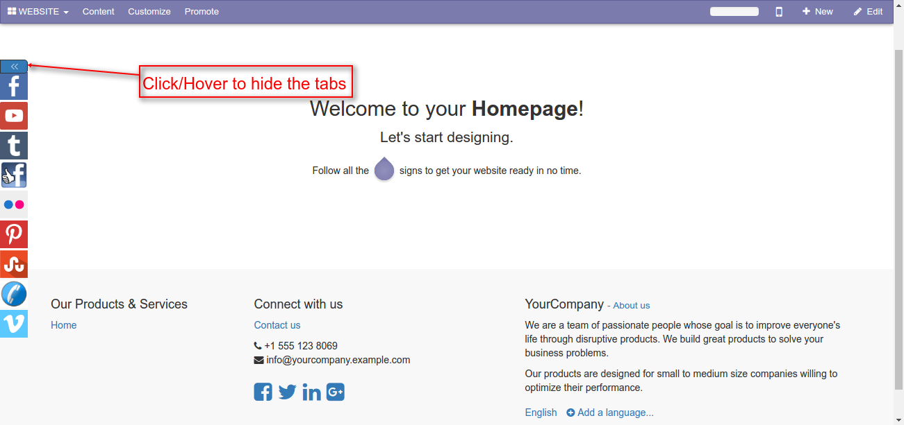
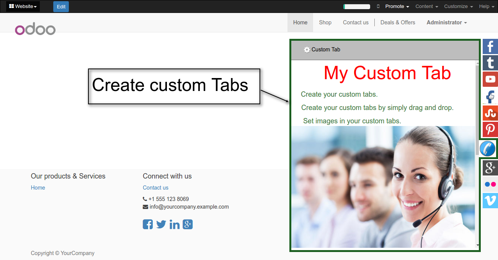
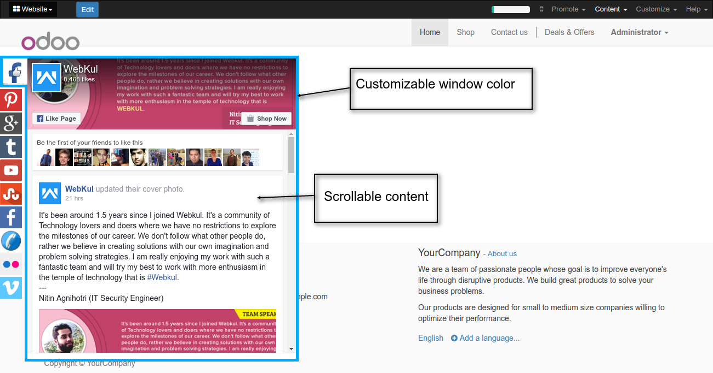
View setup and configuration
Configurations
Create a Tab
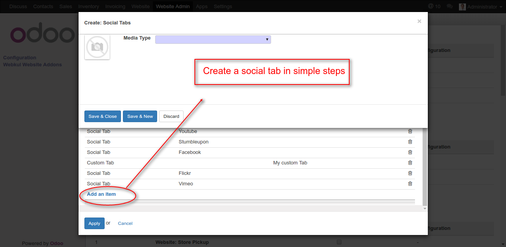
Some key points
- Create a social tab or a custom tab.
- Simply click on add an item and create the tab.
- Select the media type (social tab or custom tab) you want to create.
- Choose an icon for the tab.
General Information

Some key points
- For creation of a social tab fill the required information
- Select a social tab from the selection box.the selection box contains nine social tabs like facebook(posts) , facebook like, youtube, viemo, tumblr, flikr, google+, stumbleupon and pinterest.
- You can customize the tab by simply adding the color of the tab window in website ,limit of the posts to display , Title of the tab etc.
Credentialds For Social network tabs
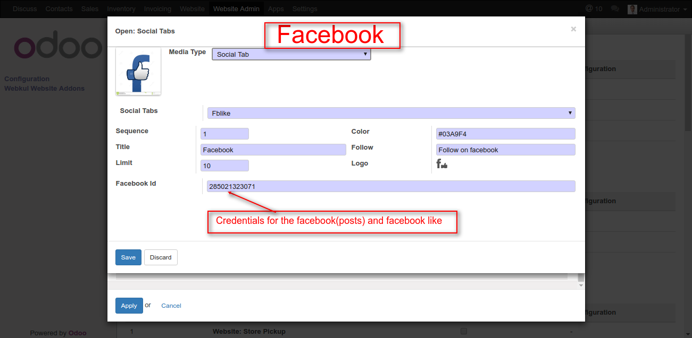
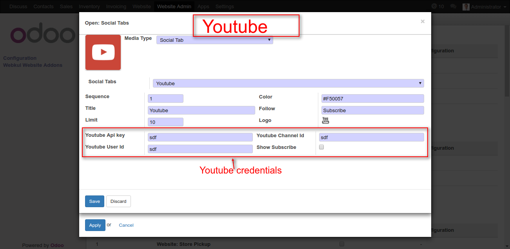
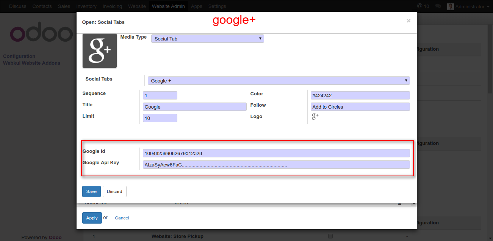
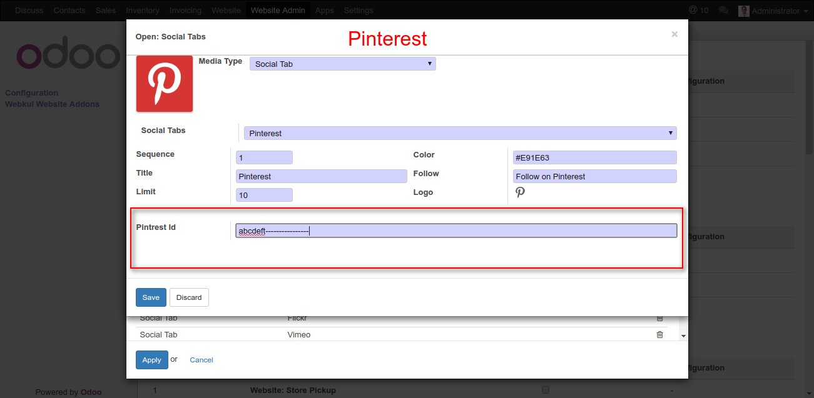
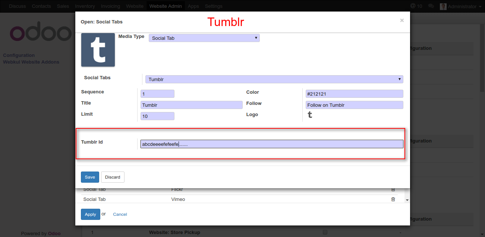
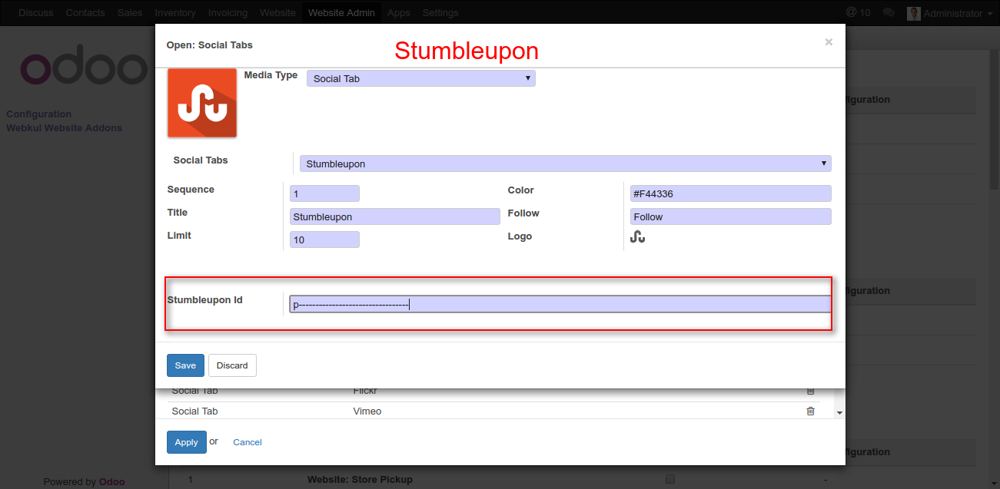
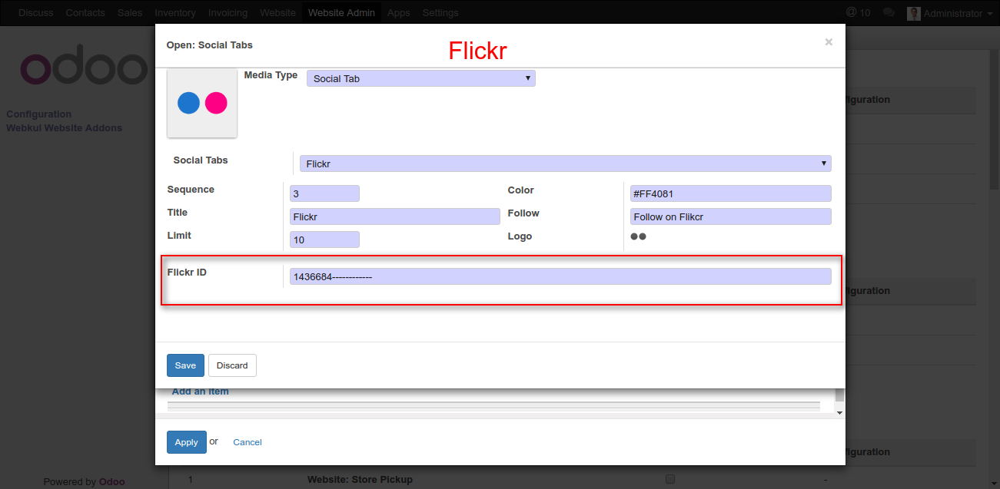
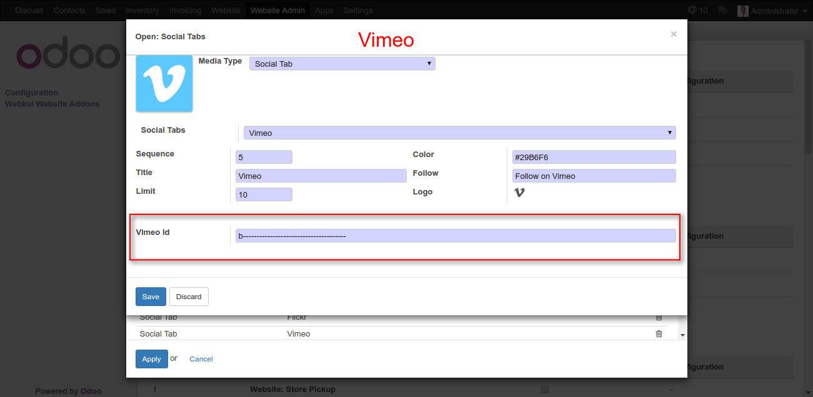
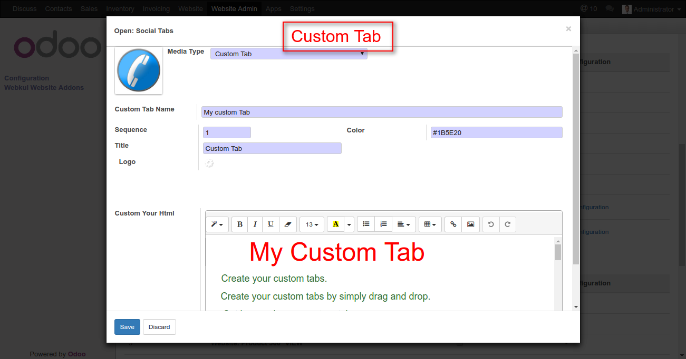